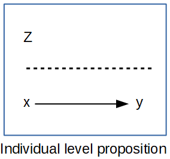
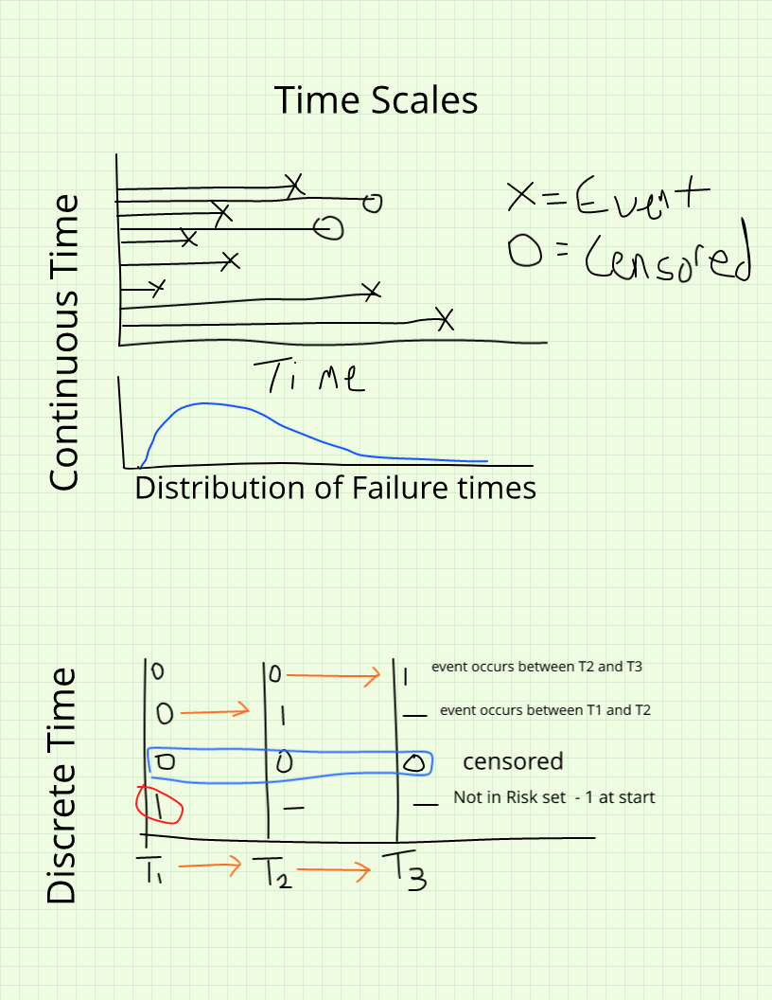
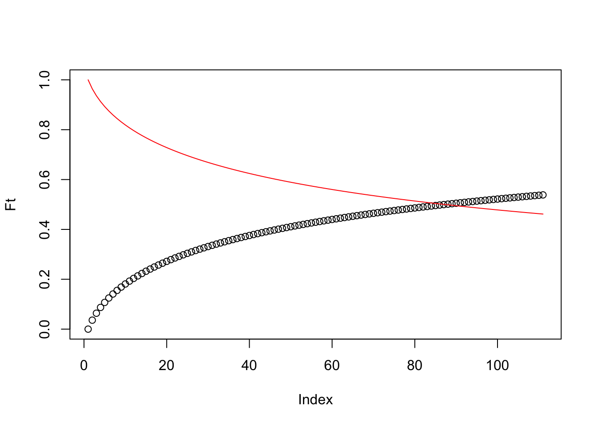
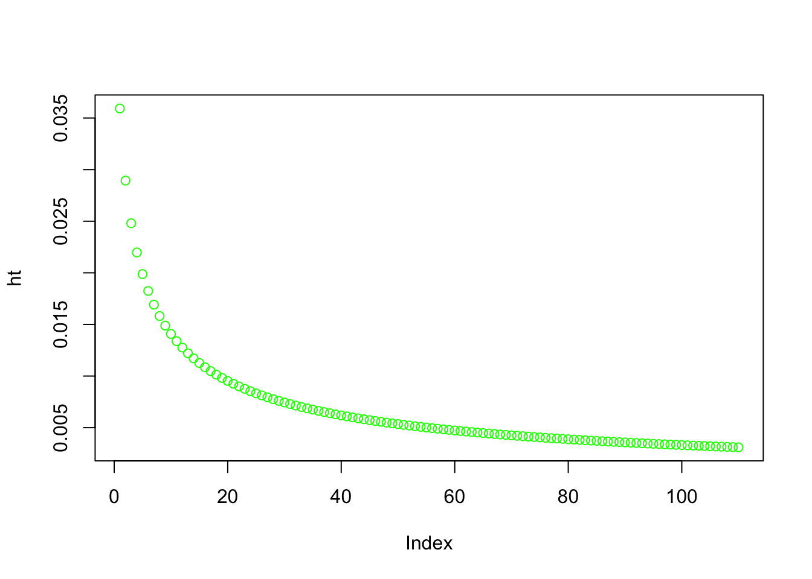

Demographic studies began to focus on individual level outcomes once the availability of individual level census and social/health survey data became more prevalent in the 1960’s and 1970’s. Corresponding with this availability of individual level data, demography began to be influenced by sociological thought, which brought a proper theoretical perspective to demographic studies, which, before this period were dominated by methodological issues and descriptions of macro scale demographic processes we saw in the previous chapter.
This chapter focuses on how we model individual level observational data, with a focus on data from demographic surveys. In doing this, I focus on two primary goals, first to illustrate how to conduct commonly used regression analysis of demographic outcomes as measured in surveys, drawing heavily on data from the ******. Secondly, I describe the event-history framework that is used in much of social science when we analyze changes in outcomes between time points, or in describing the time to some demographic event, such as having a child or dying.
6.0.1 Individual-level focus
In contrast to the macro-demographic perspective described in the previous chapter, the micro-demographic perspective is focused on the individual rather than the aggregate. Barbara Entwisle (2007) explains, micro-demography focuses on how individuals are modeled within demographic studies, which focus on individual level behaviors and outcomes as a prime importance. Most of the time in an individual, or micro-demographic focus, our hypotheses are related to how the individual outcome or behavior is influenced by characteristics of the individual, usually without concern or interest in the physical or social context in which the individual lives their life. For instance, in a micro-demographic study of mortality, the researcher may make ask: Do individuals with a low level of education face higher risk of death, compared to people with a college education This in and of itself says nothing about the spatial context in which the person lives, it is only concerned with characteristics of the person.
6.0.2 Individual level propositions
If we are concerned with how individual-level factors affect each person’s outcome, then we are stating an individual level, or micro, proposition. In this type of analysis, we have y and x, both measured on our individual level units. We may also have a variable Z measured on a second-level unit, but we’ll wait and discuss these in the next chapter. An example of this micro-level, or individual level, proposition would be that we think a persons health is affected by their level of education.
 ## Types of individual level outcomes In the analysis of micro-demographic outcomes, we encounter a wide variety of outcomes. Some are relatively simple recoding of existing survey data, other times the outcomes depend on repeated measures of some behavior in a longitudinal framework. At the heart of different outcomes are different assumed statistical distributions used to model them, and the choices that we face related to which outcome best suits a particular outcome. Based on the Generalized Linear Model framework introduced in the previous chapter, in this chapter my goal is to illustrate how to use this framework for analyzing a variety of different types of outcomes. Also, I show how to use appropriate corrections for using complex survey data in the context of the various outcome types, relying heavily on the survey and svyVGAM packages (Lumley 2004, 2021).
6.0.3 Continuous outcomes
The workhorse for continuous outcomes in statistics is the Gaussian, or Normal distribution linear model, which was reviewed in the previous chapter. The Normal distribution is incredibly flexible in its form, and once certain restrictions are removed via techniques such as generalized least squares, the model becomes even more flexible. I do not intend to go over the details of the model estimation in this chapter, as this was covered previously. Instead, I will use a common demographic survey data source, the Demographic and Health Survey model data to illustrate how to include survey design information and estimate the models. In addition to the Normal distribution, other continuous distributions including the Student-t and Gamma distributions are also relevant for modeling heteroskedastic and skewed continuous outcomes, as described in the previous chapters.
6.0.3.1 Data for examples
6.0.3.2 Discrete
6.0.3.3 Binary Logistic regression model
6.0.3.4 Marginal effects
6.0.3.5 Ordinal logistic regression model
6.0.3.6 Multinomial logistic regression model
6.0.3.7 Changes in an outcome over time
6.0.3.8 Creating an event history dataset
6.0.4 Creating a longitudinal dataset
6.1 Event history framework
6.1.1 When to conduct an event history analysis?
When you questions include
When or Whether
When > how long until an event occurs
Whether > does an event occur or not
If your question does not include either of these ideas (or cannot be made to) then you do not need to do event history analysis
6.1.2 Basic Propositions
Since most of the methods we will discuss originate from studies of mortality, they have morbid names
Survival – This is related to how long a case lasts until it experiences the event of interest
How long does it take?
Risk – How likely is it that the case will experience the event
Will it happen or not?
6.1.3 Focus on comparison
Most of the methods we consider are comparative by their nature
How long does a case with trait x survive, compared to a case with trait y?
How likely is it for a person who is married to die of homicide relative to someone who is single?
Generally we are examining relative risk and relative survival
6.1.4 Some terminology
State – discrete condition an individual may occupy that occur within a state space. Most survival analysis methods assume a single state to state transition
State space – full set of state alternatives
Episodes/Events/Transitions – a change in states
Durations – length of an episode
Time axis – Metric for measuring durations (days, months, years)
State Space Illustration
6.1.5 Issues in event history data
6.1.5.1 Censoring
Censoring occurs when you do not actually observe the event of interest within the period of data collection
e.g. you know someone gets married, but you never observe them having a child
e.g. someone leaves alcohol treatment and is never observed drinking again
Censoring
6.1.5.2 Non-informative censoring
The individual is not observed because the observer ends the study period
The censoring is not related to any trait or action of the case, but related to the observer
We want most of our censoring to be this kind
6.1.5.3 Informative censoring
The individual is not observed because they represent a special case
The censoring IS related to something about the individual, and these people differ inherently from uncensored cases
People that are censored ARE likely to have experience the event
6.1.5.4 Right censoring
An event time is unknown because it is not observed.
This is easier to deal with
6.1.5.5 Left censoring
An event time is unknown because it occurred prior to the beginning of data collection, but not when
This is difficult to deal with
6.1.5.6 Interval censoring
The event time is known to have occurred within a period of time, but it is unknown exactly when
This can be dealt with
6.2 Time Scales
Continuous time
Time is measured in very precise, unique increments > miles until a tire blows out
Each observed duration is unique
Discrete time
Time is measured in discrete lumps > semester a student leaves college
Each observed duration is not necessarily unique, and takes one of a set of discrete values

Time Scales
6.2.0.1 Making continuous outcomes discrete
Ideally you should measure the duration as finely as possible (see Freedman et al)
Often you may choose to discretize the data > take continuous time and break it into discrete chunks
Problems
This removes possibly informative information on duration variability
Any discrete dividing point is arbitrary
You may arrive at different conclusions given the interval you choose
You lose information about late event occurrence
Lose all information on mean or average durations
6.3 Kinds of studies with event history data
Cross sectional
Measured at one time point (no change observed)
Can measure lots of things at once
Panel data
Multiple measurements at discrete time points on the same individuals
Can look at change over time
Event history
Continuous measurement of units over a fixed period of time, focusing on change in states
Think clinical follow-ups
Longitudinal designs
Prospective designs
Studies that follow a group (cohort) and follow them over time
Expensive and take a long time, but can lead to extremely valuable information on changes in behaviors
Retrospective designs
Taken at a cross section
Ask respondents about events that have previously occurred.
Generate birth/migration/marital histories for individuals
Problems with recall bias
DHS includes a detailed history of births over the last 5 years
Record linkage procedures
Begin with an event of interest (birth, marriage) and follow individuals using various record types
Birth > Census 1880 > Census 1890 > Marriage > Birth of children > Census 1900 > Tax records >Death certificate
Mostly used in historical studies
Modern studies link health surveys to National Death Index (NHANES, NHIS)
7 Functions of Survival Time
7.1 Some arrangements for event history data
7.1.1 Counting process data
This is what we are accustomed to in the life table
In life tables, we had lots of functions of the death process. Some of these were more interesting than others, with two being of special interest to use here. These are the \(l(x)\) and \(q(x, n)\) functions. If you recall, \(l(x)\) represents the population size of the stationary population that is alive at age \(x\), and the risk of dying between age \(x, x+n\) is \(q(x, n)\).
These are genearlized more in the event history analysis literature, but we can still describe the distrubion of survival time using three functions. These are the Survival Function, \(S(t)\), the probability density function, \(f(t)\), and the hazard function, \(h(t)\). These three are related and we can derive one from the others.
Now we must generalize these ideas to incorporate them into the broader event-history framework
Survival/duration times measure the time to a certain event.
These times are subject to random variations, and are considered to be random iid (independent and identically distributed; random) variates from some distribution
The distribution of survival times is described by 3 functions
The survivorship function, \(S(t)\)
The probability density function, \(f(t)\)
The hazard function, \(h(t)\)
3 functions
Ft<-cumsum(dlnorm(x =seq(0, 110, 1), meanlog =4.317488, sdlog =2.5)) #mean of 75 years, sd of 12.1 yearsft<-diff(Ft)St<-1-Ftht<-ft/St[1:110]plot(Ft, ylim=c(0,1))lines(St, col="red")

plot(ht, col="green")

These three are mathematically related, and if given one, we can calculate the others
These 3 functions each represent a different aspect of the survival time distribution.
The fundamental problem in survival analysis is coming up with a way to estimate these functions.
7.2.1 Defining the functions
Let T denote the survival time, our goal is to characterize the distribution of T using these 3 functions.
Let T be a discrete(or continuous) iid random variable and let \(t_i\), be an occurrence of that variable, such that \(Pr(t_i)=Pr(T=t_i)\)
7.2.2 The distribution function, or pdf
Like any other random variates survival times have a simple distribution function that gives the probability of observing a particular survival time within a finite interval
The density function is defined as the limit of the probability that an individual fails (experiences the event) in a short interval \(t+\Delta t\) (read delta t), per width of \(\Delta t\), or simply the probability of failure in a small interval per unit time, \(f(t_i) = Pr(T=t_i)\).
If \(F(t)\) is the cumulative distribution function for T, given by:
\[ F(t) = \int_{0}^{t} f(u) du = Pr(T \leqslant t )\] Which is the probability of observing a value of T prior to the current value, t.
The hazard function relates death, f(t), and survival, S(t), to one another
\[h(t) = \frac{f(t)}{S(t)}\]\[h(t) = \lim_{\Delta t \rightarrow 0} \frac{Pr(t \leqslant T \leqslant t + \Delta t | T \geqslant t)}{\Delta t}\]
Which is the failure rate per unit time in the interval t, \(t+\Delta t\), the hazard may increase or decrease with time, or stay the same. This is really dependent on the distribution of failure times.
7.3 Relationships among the three functions
If \(ft = \frac{dF(t)}{dt}\) and \(S(t) = 1- F(t)\) and, \(h(t) = \frac{f(t)}{S(t)}\), then we can write:
\[f(t) = \frac{-dS(t)}{dt}\]
and the hazard function as:
\[h(t) = \frac{-d \text{ log } S(t)}{dt}\]
If we integrate this and let \(S(0)=1\), then
\[S(t) = exp^{-\int_{0}^t h(u) du} = e^{-H(t)}\]
where the quantity, \(H(t)\) is called the cumulative hazard function and, \(H(t) = \int h(u) du\), then
Unlike the f(t) or S(t), h(t) describes the risk an individual faces of experiencing the event, given they have survived up to that time.
This kind of conditional probability is of special interest to us.
We can extend this framework to include effects of individual characteristics on one’s risk, thus not only introducing dependence on time, but also on these characteristics (covariates).
We can re-express the hazard rate with both these conditions as:
\[h(t|x) = \lim_{\Delta t \rightarrow 0} \frac{Pr(t \leqslant T \leqslant t + \Delta t | T \geqslant t, x)}{\Delta t}\] ## Logistic regression When a variable is coded as binary, meaning either 1 or 0, the Bernoulli distribution is used, as in the logistic regression model. When coded like this, the model tries to use the other measured information to predict the 1 value versus the 0 value. So in the basic sense, we want to construct a model like:
\[Pr(y=1) =\pi = \text{some function of predictors}\]